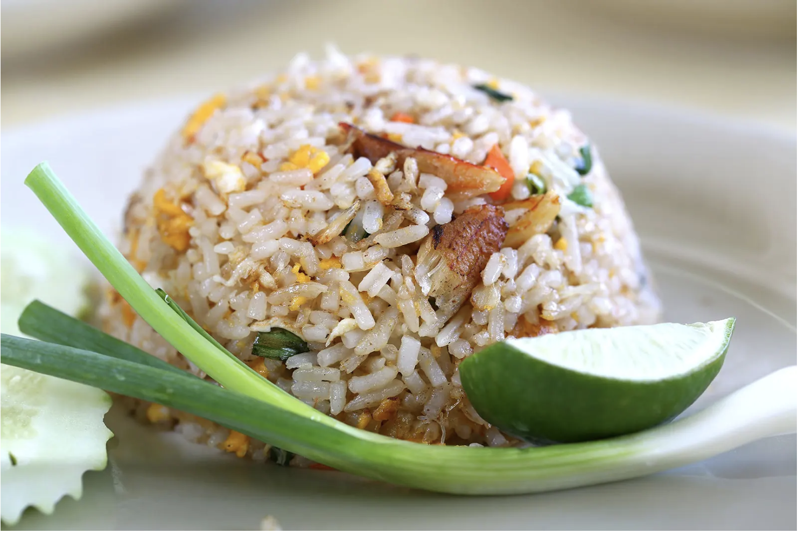

Thailnad Travel
사와디캅! สวัสดีครับ!
태국 여행을 둘러보시는 여러분을 환영합니다 !
테마에 맞춰 여행지를 소개해드리겠습니다 !
태국의 음식

태국 음식 먹기는 방콕과 태국 휴가에서 크고도 중요한 부분을 차지해요. 이국적인 풍미와 향신료 때문에 태국 요리는 전 세계적으로 인기가 있죠. 도시의 골목길을 걷다 보면 어느새 음식 노점에 들러서 꼬치고기, 볶음밥, 국수, 얼큰한 국물을 저렴한 가격으로 즐기게 되실 거예요. 보다 편안한 분위기에서 식사하고 싶다면 다양한 태국 전통 요리 메뉴를 파는 레스토랑을 찾으세요. 여기서 소개하는 최고의 태국 음식을 참고해서 도시 최고의 현지 음식을 맛보세요.
태국의 액티비티
끄라비는 태국의 푸껫이나 파타야만큼 떠오르는 신흥 휴양지입니다. 200여 개의 섬과 에메랄드빛 바다, 기암괴석 등 뛰어난 자연경관과 편안한 리조트로 주목받고 있습니다. ‘4섬 투어’, ‘홍섬 투어’, ‘피피섬 투어’와 같은 대표적인 여행코스를 즐겨보세요. 카약을 타고 아름다운 열대림 ‘맹그로브 정글’을 누비거나, ‘라일라이 해변’에서 록클라이밍 같은 액티비티도 즐길 수 있습니다. 또한, ‘아오낭 비치의 선셋 포인트’에서 황금빛 노을을 감상하길 추천합니다. 힐링이 되는 태국의 지상 낙원, 끄라비로 지금 떠나보세요./h5>
태국의 볼거리
태국은 방콕의 야시장, 까오산로드, 아이콘시암과 푸껫의 바다 액티비티 뿐 아니라 잘 알려지지 않은 도시들도 존재합니다. 디지털 노마드의 성지 조용한 도시인 치앙마이와 한국인에게 잘 알려지지 않은 코사무이,끄라비 등의 지역과 유산들을 소개합니다.